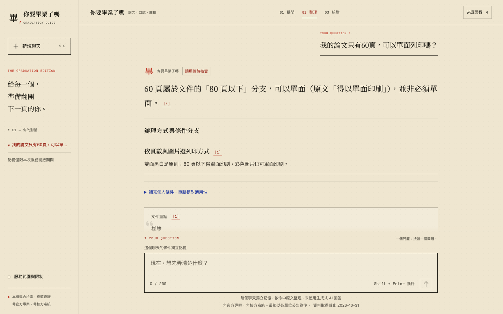

PRODUCT WALKTHROUGH
先看懂，再核對。
這是本機問答原型的實際介面截圖。公開版提供產品導覽與固定示例，沒有連接校園檢索服務，也不會收集你的提問。
- 提出問題用自己的話描述論文、口試或離校問題。
- 閱讀重點與條件先看整理後的回答，再確認例外與待核實資訊。
- 打開來源展開原文，核對文件出處與對應片段。

本機版另支援同一聊天追問、不同聊天獨立記憶。記憶僅限服務開啟與工作階段有效期間，不永久保存。
體驗固定回答示例 ↗PRODUCT WALKTHROUGH
這是本機問答原型的實際介面截圖。公開版提供產品導覽與固定示例，沒有連接校園檢索服務，也不會收集你的提問。

本機版另支援同一聊天追問、不同聊天獨立記憶。記憶僅限服務開啟與工作階段有效期間，不永久保存。
體驗固定回答示例 ↗